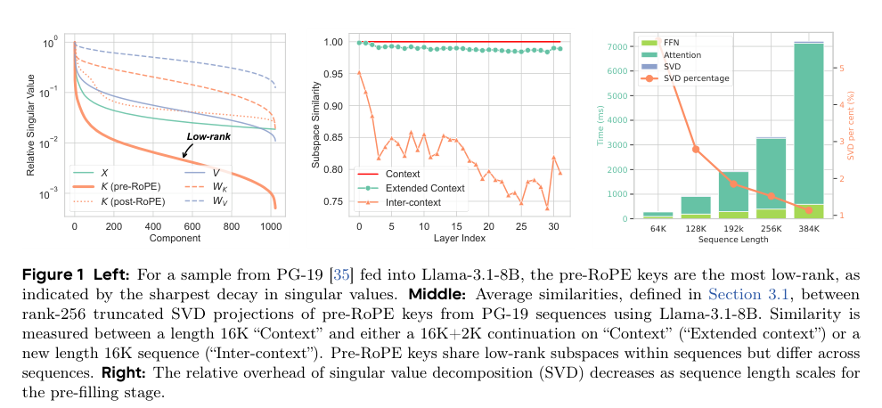
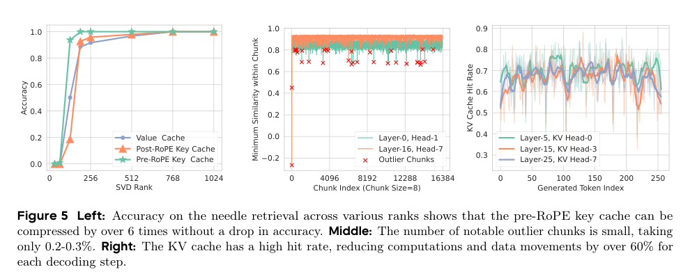
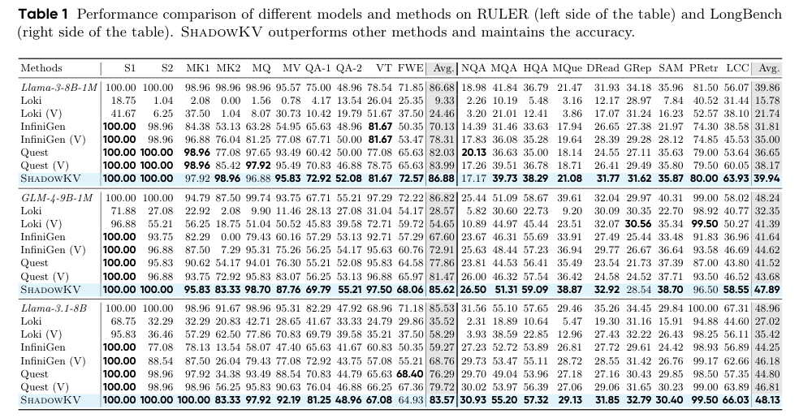
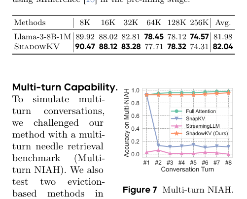
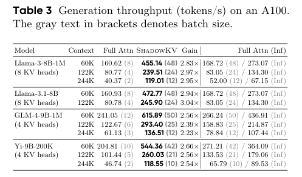
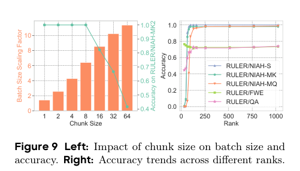

本报告由大模型自动生成，可能存在理解、归纳或数据转述错误；请以原论文为准。 ShadowKV: KV Cache in Shadows for High-Throughput Long-Context LLM InferenceSun, Hanshi, Li‐Wen Chang, Wenlei Bao, Size Zheng, Ningxin Zheng, Liu, Xin, Harry Dong, Yuejie Chi, Beidi Chen · arXiv (Cornell University) · 2024 · 原文 · PDF 报告模型：gemini-3.1-pro-preview / high 当前日期是 2026 年 11 月 9 日。本文是对《ShadowKV: KV Cache in Shadows for High-Throughput Long-Context LLM Inference》（ShadowKV：用于高吞吐量长上下文大型语言模型推理的暗影 KV 缓存）一文的详细解读。 全文主线与核心大意背景与问题：在大型语言模型（LLM，通过深度神经网络在海量文本上训练以预测下一个词的模型）处理超长上下文（如 100 万个词元/Token）时，推理过程面临严重的性能瓶颈。这是由于 KV Cache（键值缓存） 的线性膨胀引起的。KV Cache 是注意力机制（Attention）中用于保存历史词元特征（Key 键向量和 Value 值向量）的显存结构，旨在避免重复计算。当序列极长且批处理大小（Batch Size，并行处理的请求数）增加时，完整的 KV Cache 会耗尽 GPU 显存（限制了并行度），并且在解码（Decoding，逐词生成）阶段每次都需要从显存读取庞大的 KV 数据，导致极低的吞吐量。 作者的洞察与方法：作者通过实证发现，未经过旋转位置编码的 Key 向量（pre-RoPE keys） 具有极强的低秩（Low-rank）特性，可以被高度压缩，而经过编码后的 Key 和 Value 则不具备此特性。基于此，作者提出了 ShadowKV 系统：在预填充（Pre-filling，处理输入提示词）阶段，对 pre-RoPE keys 进行低秩分解并保留在 GPU 显存中，同时将不具备低秩特性的 Value 完整卸载（Offload）到主机 CPU 内存中。在解码阶段，系统利用少量保留在 GPU 上的特征（Landmarks，即区块均值）进行粗略的注意力打分，筛选出极少量的关键词元（Sparse Attention，稀疏注意力），随后实时从低秩矩阵中重建这些关键的 Key，并利用 CPU 和 GPU 的异步通信机制并行拉取对应的 Value。 结果与意义：这种设计将 GPU 显存占用降低了 6 倍以上，从而允许系统支持大 6 倍的 Batch Size。最终在 NVIDIA A100 GPU 上，该系统在保证模型准确率的前提下，实现了高达 3.04 倍的吞吐量提升。这解决了长上下文大模型在实际部署中“存不下”且“算得慢”的工程难题。 由于本文主要关注构建在商品级 GPU（如 NVIDIA A100）和现有 PCIe 协议之上的软件系统与算法联合设计，本文并未涉及体系结构与 EDA（电子设计自动化）之间的跨层协同优化。所有的硬件约束（如 PCIe 带宽、GPU 显存容量）均被视为不可变的物理边界，在此边界内进行软件层面的调度与近似计算。 1 Introduction (引言)长上下文 LLM（如支持 1M Token 的模型）在多文档问答等复杂任务中表现优异。然而，长上下文推理带来了巨大的挑战。推理过程分为两个阶段：预填充阶段（并行处理用户输入的所有 Token）和解码阶段（自回归地逐个生成后续 Token）。在解码阶段，模型需要频繁访问不断增长的 KV Cache。 补充背景：在 Transformer 架构中，注意力机制的计算公式依赖于 Query（查询）、Key（键）和 Value（值）三个矩阵。每生成一个新 Token，都需要将当前的 Query 与历史上所有 Token 的 Key 进行点积，再用得到的分数对 Value 进行加权求和。如果不缓存历史的 K 和 V，每次都需要重新计算整个前文，计算量极大。因此，系统必须将它们存入 GPU 显存（即 KV Cache）。 现有的解决方案存在局限性：
因此，作者提出 ShadowKV 旨在同时达成三个目标：减少 GPU 显存使用、最小化推理延迟、并在有限的稀疏 KV 预算下保持模型精度。 2 Related Works (相关工作)本节综述了相关领域的三类方法，并指出了它们的不足：
3 Observations (实证观察)这是本文设计的基石，作者通过实验得出了两个关于模型特征的物理/算法规律，作为后续系统设计的依据。 3.1 Low-Rank Keys and Offloaded Values for Storage (用于存储的低秩键与卸载值)作者研究了 KV Cache 的冗余性。在神经网络中，如果一个矩阵是低秩（Low-rank） 的，意味着它内部包含大量线性相关的冗余信息，可以通过极少量的基向量和系数（即低秩投影）来重建。 预备概念：RoPE（旋转位置编码）。RoPE 是当代 LLM（如 LLaMA）中广泛采用的一种技术，它通过在二维平面上对词元的词向量进行特定角度的旋转，将词元在句子中的绝对或相对位置信息注入到特征中。
作者的发现：如原图 1 左侧所示，作者对模型的权重矩阵、输入、pre-RoPE、post-RoPE 以及 Value 进行了奇异值分解（SVD）。发现 pre-RoPE keys 具有最为显著的低秩特性，奇异值衰减最快（可以压缩 6 倍而不掉点，见图 5 左侧）。相反，Value 矩阵和 post-RoPE keys 则缺乏这种低秩性。这解释了为什么不能简单地对完整的 KV Cache 进行统一压缩。   为了验证低秩子空间在不同序列间和序列内部是否共享，作者定义了以下相似度公式：
结论：不同句子之间的 pre-RoPE keys 子空间差异很大（不能用一个离线的通用投影矩阵压缩所有数据），但同一个句子内部及其后续生成的 Token 之间高度共享低秩子空间。因此，压缩必须是在线（Online）且依赖于当前提示词（Prompt-dependent） 的。 3.2 Accurate KV Selection for Fast Decoding (用于快速解码的精确 KV 选择)为了实现稀疏注意力，系统必须决定针对当前的 Query，历史中哪些 Key 是最重要的。由于 pre-RoPE K 被压缩，如果每次都把所有 K 恢复出来再进行相似度计算，计算开销不可接受。 作者的发现：通过对 128K 长度的上下文进行分析，作者发现 post-RoPE keys 具有很强的空间局部性（Spatial Locality）。作者引入了 Chunk（区块） 的概念，即将连续的 个词元（实验中 ）划分为一组。对于绝大多数 Chunk，其内部各个词元的 Key 向量与该 Chunk 的均值（Mean）之间具有极高的余弦相似度。 只有极少数（0.2% - 0.3%）的 Chunk 内部差异极大，被称为 Outliers（异常值/离群点）。 因此，作者做出系统设计选择：将 Chunk 的均值保留在 GPU 中作为 Landmarks（地标）。解码时，Query 只需要先与数量极少的 Landmarks 计算注意力得分，就能粗略且准确地定位到最重要的几个 Chunk。对于 Outliers，则不进行压缩，作为静态缓存（Static Cache）原样保留在 GPU 中以保证精度。 4 ShadowKV (系统设计)本节正式介绍了 ShadowKV 的算法流程与系统架构，系统数据流清晰地划分为预填充和解码两个阶段。 4.1 Algorithm (算法实现)预填充阶段（Pre-filling）：详见论文 Algorithm 1。目的是在处理初始长提示词时优化内存。 首先定义本阶段的输入符号（均为作者设定的张量变量，由模型正向传播产生）：
操作流程：
解码阶段（High-throughput Decoding）：详见论文 Algorithm 2。系统逐词生成，每次输入一个新的 Query 进行计算。
4.2 Theoretical Equivalent Bandwidth (理论等效带宽)为了量化说明 ShadowKV 为什么能在同样的硬件上“显得”吞吐量更高，作者提出了一个性能评价指标：理论等效带宽（）。它指的是如果要达到 ShadowKV 当前的计算速度，朴素全注意力机制需要具备的物理显存带宽。 作者列出了推导公式： 逐符号解释：
逻辑推演：公式分子 代表全量注意力需要搬运完整 和 的理论极限数据量。分母分为三项：读取地标进行筛选的数据量 ()，进行标准注意力计算的数据量 ()，以及因为缓存未命中而被迫走慢速 PCIe 拉取 Value 的惩罚项 (，此处用 GPU 带宽作了单位时间的归一化转换)。 在 A100 环境下代入参数，算出的等效带宽高达 7.2 TB/s（超过了 A100 自身 2 TB/s 的物理上限）。这证明了通过大幅削减不可避免的内存移动，ShadowKV 打破了物理显存带宽瓶颈。 5 Empirical Evaluation (实证评估)本节展示了实验结果。测试在 NVIDIA A100 上进行，使用的基础模型包括 Llama-3.1-8B, GLM-4-9B-1M, Yi-9B-200K 等长上下文模型。 准确率 (5.1 Accuracy Evaluation) 作者选取了 RULER (多文档问答与复杂推理)、LongBench (信息提取、摘要) 和 Needle In A Haystack (NIAH，大海捞针，测试在长文本中检索特定信息的能力) 几个基准测试。 如表 1（Table 1）所示，在 128K 长度下，限定所有稀疏注意力方法仅使用 1.56% 的 KV 预算。结果表明，相比于 Quest 和 InfiniGen 等基准线在复杂任务上的严重掉点，ShadowKV 保持了极高的鲁棒性，基本维持了与全量注意力（Full Attention）无损的精度。图 7 的多轮对话测试更是证明了，与丢弃 Token 的方法（如 SnapKV）不同，ShadowKV 保留了完整的历史信息，在多轮互动中依然保持高准确率。   效率与吞吐量 (5.2 Efficiency Evaluation) 这是评估系统能否落地部署的核心指标。如表 3（Table 3）所示，由于卸载了 Value 并压缩了 Key，ShadowKV 在 A100 上的极限存活 Batch Size 从原先的 8 扩大到了 48（提升 6 倍）。在这个高负载下，GPU 的计算单元被充分“喂饱”，解码吞吐量（Tokens/s）飙升了 2.83 至 3.04 倍。 作者特别指出，即使与假设 GPU 具有“无限显存（Infinite GPU Memory）”的理论全量注意力相比，ShadowKV 依旧更快。这是因为稀疏计算直接省掉了超过 98% 的 FLOPs（浮点运算）和不必要的访存。  消融实验 (5.3 Ablation Results) 作者验证了超参数的选择（见图 9）： 
总结本文从长上下文 LLM 推理时的 KV Cache 内存墙问题出发。作者首先通过对模型运行时的特征分布进行实证观测，挖掘出两个关键物理与算法特性：pre-RoPE keys 具有显著的低秩可压缩性，以及 post-RoPE keys 具有高度的空间聚集性（附带少量离群点）。 基于这两个洞察，作者提出了一套纯软件侧的系统解决方案 ShadowKV：利用 GPU/CPU 异构存储解耦 K 和 V 的存放位置，利用地标机制进行轻量级的稀疏定位，并通过 CUDA 流机制实现数据传输与特征解码重建的并行覆盖。 最终，该系统在未修改任何硬件架构、不牺牲模型精度的限制条件下，通过软件调度突破了 GPU 显存容量和访存带宽的双重枷锁，将吞吐量提升了数倍，为长上下文大模型的廉价高效部署提供了一条可行的工程路径。 局限性注记：本文的结论高度依赖于现有 LLM（特别是基于 RoPE 的旋转位置编码）的数学特性。如果未来模型结构发生根本改变（例如不再使用 RoPE 或完全替换 Transformer 的自注意力机制）， pre-RoPE key 的低秩属性假设可能失效，该方法的适用性将受限。 |